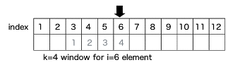
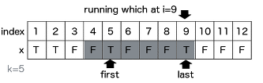
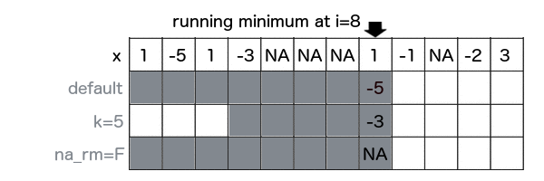
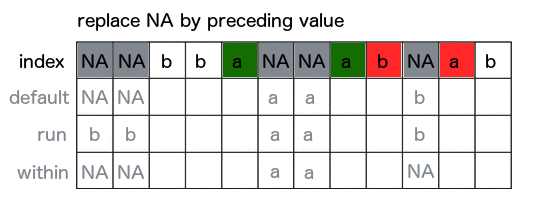

output: github_document:
runner an R package for running operations.

Running functions for R vector written in Rcpp
You can install runner from github with:
# install.packages("runner")
# devtools::install_github("gogonzo/runner")
The main idea of the package is to provide running operations on R vectors. Running functions are these which are applied to all elements up to actual one. For example implemented already in base cumsum, cummin etc. Functions provided in this package works similar but with extended functionality such as handling NA and custom window size. The most functions provided in package are based on the same logic:
k denotes number of elements from i-th backwards, where functions are calculated.
na_rm=T handling missing and is equivalent to na.rm.
na_pad=T if window size exceeds number of available elements, than first k-1 elements are filled with NA.
which used with running index, which value ('first' or 'last')
Function creates list of windows. Because runner provide limited functionality, one can create running-window-list which can be further processed by user to obtain desired statistic (eg. window sum). x is a vector to be 'runned on' and k is a length of window. In this example window length is varying as specified by k. Provide one value to obtain constant window size.
library(runner); library(magrittr)
set.seed(11)
window_run( x = 1:5, k = c(1,2,3,3,2) )
#> [[1]]
#> [1] 1
#>
#> [[2]]
#> [1] 1 2
#>
#> [[3]]
#> [1] 1 2 3
#>
#> [[4]]
#> [1] 2 3 4
#>
#> [[5]]
#> [1] 4 5
Such windows can be used in further calculations, with any R function. Example below shows how to obtain running sum in specified, varying window length (specified by k).
window_run( x= 1:5, k = c(1,2,3,3,2) ) %>%
lapply(sum) %>%
unlist
#> [1] 1 3 6 9 9
User can use unique_run create list of unique elements within specified window size.
x2 <- sample( letters[1:3], 6, replace=TRUE)
x2
#> [1] "a" "a" "b" "a" "a" "c"
unique_run( x=x2, k = 3 )
#> [[1]]
#> [1] "a"
#>
#> [[2]]
#> [1] "a"
#>
#> [[3]]
#> [1] "a" "b"
#>
#> [[4]]
#> [1] "a" "b"
#>
#> [[5]]
#> [1] "a" "b"
#>
#> [[6]]
#> [1] "a" "c"
(mean|sum|min|max)_runRunner provides basic aggregation methods calculated within running windows. Below example showing some functions behaviour for different arguments setup. Let's take a look at 8th element of a vector on which min_run is calculated.
First setup uses default values, so algorithm is looking for minimum value in all elements before actual (i=8). By default missing values are removed before calculations by argument na_rm=TRUE, and also window is not specified. The default is equivalent of base::cummin with additional option to ignore NA values. In second example within window k=5, the lowest value is -3. In the last example minimum is not available due to extistence of NA. Graphical example is reproduced below in the code.

x <- c(1,-5,1,-3,NA,NA,NA,1,-1,NA,-2,3)
k <- c(4,5,2,5,4,4,2,2,4,4,3,1)
a0 <- cummin(x)
a1 <- min_run(x, na_rm = TRUE)
a2 <- min_run(x, k=5, na_rm = TRUE)
a3 <- min_run(x, na_rm = FALSE)
a4 <- min_run(x, k=k, na_rm = TRUE, na_pad = TRUE)
data.frame(x, a0, a1, a2, a3, a4)
#> x a0 a1 a2 a3 a4
#> 1 1 1 1 1 1 NA
#> 2 -5 -5 -5 -5 -5 NA
#> 3 1 -5 -5 -5 -5 NA
#> 4 -3 -5 -5 -5 -5 -5
#> 5 NA NA -5 -5 NA -5
#> 6 NA NA -5 -5 NA -3
#> 7 NA NA -5 -3 NA NA
#> 8 1 NA -5 -3 NA 1
#> 9 -1 NA -5 -1 NA -1
#> 10 NA NA -5 -1 NA -1
#> 11 -2 NA -5 -2 NA -2
#> 12 3 NA -5 -2 NA 3
Function used to replace NA with previous non-NA element. To understand how fill_run works, take a look on ilustration. Row 'x' represents, and another rows represent replaced NA by fill_run with different options setup (run_for_first=TRUE and only_within=TRUE respectively). By default, fill_run replaces all NA if they were preceded by any value. If NA appeared in the beginning of the vector then it would not be replaced. But if user specify run_for_firsty=TRUE initial empty values values will be replaced by next non-empty value. Option only_within=TRUE means that NA values would be replaced if they were surrounded by pair of identiacl values. No windows provided in this functionality.

x <- c(NA, NA, "b","b","a",NA,NA,"a","b",NA,"a","b")
data.frame(x,
f1 = fill_run(x),
f2 = fill_run(x,run_for_first = T),
f3 = fill_run(x, only_within = T))
#> x f1 f2 f3
#> 1 <NA> <NA> b <NA>
#> 2 <NA> <NA> b <NA>
#> 3 b b b b
#> 4 b b b b
#> 5 a a a a
#> 6 <NA> a a a
#> 7 <NA> a a a
#> 8 a a a a
#> 9 b b b b
#> 10 <NA> b b <NA>
#> 11 a a a a
#> 12 b b b b
To count consecutive elements in specified window one can use streak_run. Following figure illustrates how streak is calculated with three different options setup for 9th element of the input vector x. First shows default configuration, with full window and na_rm=T. Second example count within k=4 window with count reset on NA. Last example counting streak with continuation after NA. Visualisation also supported with corresponding R code.

x <- c("A","B","A","A","B","B","B",NA,"B","A","B")
data.frame(
x,
s0=streak_run(x),
s1=streak_run(x, na_rm=F, k=3),
s2=streak_run(x, k=4) )
#> x s0 s1 s2
#> 1 A 1 1 1
#> 2 B 1 1 1
#> 3 A 1 1 1
#> 4 A 2 2 2
#> 5 B 1 1 1
#> 6 B 2 2 2
#> 7 B 3 3 3
#> 8 <NA> 3 NA 3
#> 9 B 4 1 3
#> 10 A 1 1 1
#> 11 B 1 1 1
To obtain index number of element satisfying some condition in window, one can use running which. Functions from this group returns index while condition is TRUE appeared before n-th element of a vector. In below example whicht_run function returns index of element containing TRUE value. If na_rm=T is specified, missing is treated as FALSE, and is ignored while searching for TRUE. While user set na_rm=F like in second example, function returns NA, because in following window TRUE appears after missing and it's impossible to be certain which is first (missing is an element of unknown value - could be TRUE or FALSE).

x <- c(T,T,T,F,NA,T,F,NA,T,F,T,F)
data.frame(
x,
s0=whicht_run(x, which="first"),
s1=whicht_run(x, na_rm=F, k=5, which="first"),
s2=whicht_run(x, k=5,"first"))
#> x s0 s1 s2
#> 1 TRUE 1 1 1
#> 2 TRUE 1 1 1
#> 3 TRUE 1 1 1
#> 4 FALSE 1 1 1
#> 5 NA 1 1 1
#> 6 TRUE 1 2 2
#> 7 FALSE 1 3 3
#> 8 NA 1 NA 6
#> 9 TRUE 1 NA 6
#> 10 FALSE 1 6 6
#> 11 TRUE 1 NA 9
#> 12 FALSE 1 NA 9